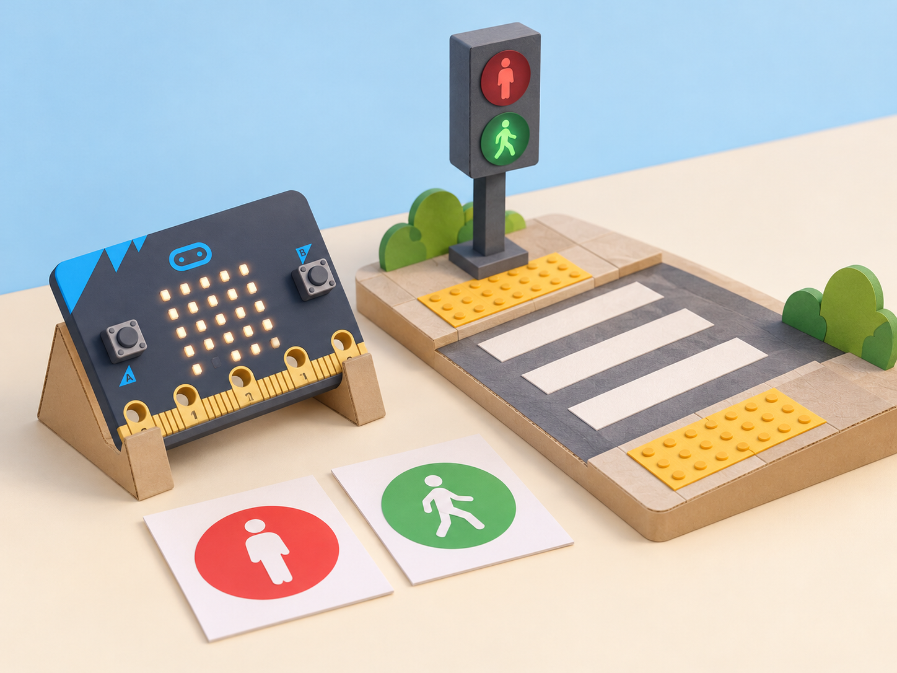

Senyalització inclusiva en una maqueta
🏷️ Accessibilitat i disseny urbà
🌱 Situació, repte i intenció
El projecte no instal·la un semàfor, no guia persones al carrer i no afirma resoldre necessitats de mobilitat o visió. Una micro:bit sola no és un senyal homologat, no detecta si el pas està lliure i no pot garantir que siga segur travessar. La finalitat és practicar disseny inclusiu, programació d’entrades i eixides, i avaluació de prototips a escala.
🎯 Aprenentatges i vocabulari
observar sense inferir experiències alienes, definir un repte, programar estats amb esdeveniments, comparar formes d’informació, construir una maqueta llegible, provar-la amb observadors voluntaris i comunicar límits d’un prototip.
🧰 Materials i preparació
Prepareu micro:bit de la dotació, portapiles o USB, MakeCode, cartró i paper per a la maqueta, pictogrames, material tàctil de manualitats, targetes de prova i full de registre. Identifiqueu si cada placa és V1 o V2 abans de programar so. La matriu 5×5 i els botons funcionen com a sortida i entrada bàsiques; la placa V2 incorpora altaveu.
La V1 necessita una eixida d’àudio compatible, com un altaveu o auriculars connectats correctament als pins, i qualsevol cablejat s’ha de preparar i supervisar per una persona adulta.
Si no sabeu quina versió teniu, dissenyeu primer una resposta visual i useu targetes o un senyal oral separat per comparar canals; no carregueu blocs exclusius de V2 en una placa V1. La guia de MakeCode indica que aquests blocs poden mostrar un error 927 en hardware V1. No cal afegir accessoris per completar el nucli de l’activitat.
📅 Seqüència didàctica
Observem el recorregut i fem preguntes (45 min)
Fase 1 · Activem i prediem
Useu un mapa de l’entorn escolar o fotografies que no mostren cares, matrícules, rutes de casa ni informació identificable. Predigueu quina informació es pot observar directament i quina exigiria consultar persones usuàries i el context.
Fase 2 · Explorem i construïm
Si l’escola autoritza l’observació exterior, feu-la des d’un recorregut segur, amb supervisió i sense interrompre cap vianant. Registreu només elements visibles: pas, vorera, desnivell, senyal, semàfor existent o informació llegible. També podeu treballar amb el mapa o fotografies autoritzades.
Fase 3 · Expliquem i registrem
Separeu fets de preguntes: «hi ha una vorada» és una observació; «impedeix passar a qualsevol persona amb cadira de rodes» requeriria consultar persones usuàries i context. Formuleu preguntes abordables a escala, com «com indiquem en una maqueta que l’estat ha canviat?». Registreu dues preguntes amb llenguatge prudent.
Fase 4 · Apliquem i millorem
Reviseu les preguntes per evitar atribuir experiències a persones que no han participat. No simuleu ceguesa, no demaneu a ningú fingir una discapacitat i no assumiu que una persona represente un grup sencer.
Fase 5 · Comprovem i reflexionem
Compartiu què heu vist directament i quina informació necessitaríeu d’una persona usuària que vulga participar.
Definim els dos estats del model (45 min)
Fase 1 · Activem i prediem
Descriviu què hauria de comunicar una maqueta quan canvia d’estat. Trieu dos estats ficticis, per exemple «espera» i «simulació de canvi», i predigueu quina entrada —botó A o B— activarà cadascun.
Fase 2 · Explorem i construïm
Construïu una maqueta de taula amb carrer, voreres i pas dibuixat. Les textures tàctils són recursos per representar materials, no una guia de dimensions normatives. Afegiu l’etiqueta visible «PROTOTIP ESCOLAR — NO S’UTILITZA AL CARRER». Esbosseu senyals amb més d’una representació: icona LED, targeta física i, només si el model ho admet, un to breu.
Fase 3 · Expliquem i registrem
Especifiqueu els dos estats, les entrades i els canals triats i justifiqueu-los. Anoteu com sabrà l’observador que és una simulació; eviteu símbols confusos amb un semàfor real o instruccions com «creua ara».
Fase 4 · Apliquem i millorem
Compareu els esbossos i reviseu qualsevol canal que no siga necessari o que puga resultar inadequat. El so no és necessàriament accessible en tots els entorns; el silenci o la targeta també són opcions.
Fase 5 · Comprovem i reflexionem
Expliqueu quina acció canvia l’estat i com es comunica el caràcter simulat del prototip.
Programem i provem la micro:bit (45 min)
Fase 1 · Activem i prediem
Abans de programar, una persona llig els esdeveniments previstos i una altra anticipa quina resposta hauria d’aparéixer en cada estat. Comproveu la versió de la placa abans d’incloure so.
Fase 2 · Explorem i construïm
En MakeCode, associeu el botó A a una icona pròpia per a «espera» i el botó B a una altra per a l’estat simulat. Proveu la matriu LED amb la llum real de la sala i reviseu que les icones siguen diferents i simples. Si useu so, comproveu l’eixida: altaveu integrat en V2 o accessori compatible en V1. Manteniu un volum moderat i una opció de silenci; el so no ha de ser l’única diferència entre estats.
Fase 3 · Expliquem i registrem
Una parella llig el codi, una altra prem els botons en l’ordre de prova i una tercera anota resposta esperada i observada. Incloeu almenys quatre proves i registreu també què ocorre després d’un reinici.
Fase 4 · Apliquem i millorem
Reviseu les icones o els esdeveniments si la resposta no és clara. Torneu a provar les entrades i comproveu si la pantalla conserva o esborra el senyal després del reinici.
Fase 5 · Comprovem i reflexionem
Expliqueu quina entrada ha activat cada resposta i què veuria o sentiria algú que encara no coneix el codi.
Construïm el prototip a escala (45 min)
Fase 1 · Activem i prediem
Reviseu l’especificació dels estats i predigueu si es podrà entendre el model sense que un membre de l’equip l’explique. Identifiqueu quina part és el dispositiu i quina representa el carrer.
Fase 2 · Explorem i construïm
Useu cartró reutilitzat per fer el carrer i suports independents per a la placa. Manteniu micro:bit i piles fora de qualsevol zona que puga mullar-se o quedar comprimida. Col·loqueu el prototip a una altura visible per a observadors asseguts i dempeus, si és viable. El paviment tàctil es pot representar amb paper rugós o peces, identificat com a símbol.
Fase 3 · Expliquem i registrem
Afegiu una llegenda dels símbols i documenteu l’etiquetatge del prototip, el suport de la placa i les alternatives de representació. No feu afirmacions de compliment normatiu a partir d’una maqueta escolar.
Fase 4 · Apliquem i millorem
Comproveu que targetes, icones i estats no es contradiguen. Si useu color, afegiu també una forma o paraula llegible perquè la interpretació no depenga només de distingir colors.
Fase 5 · Comprovem i reflexionem
Demaneu a una altra parella que interprete la maqueta sense explicació prèvia i anoteu què ha entés.
Fem proves d’ús sense simular discapacitats (45 min)
Fase 1 · Activem i prediem
Convidem companys o personal del centre a observar voluntàriament el prototip i descriure què entenen. Expliqueu que no se’ls assignarà cap diagnòstic ni se’ls demanarà parlar en nom d’una comunitat.
Fase 2 · Explorem i construïm
Registreu interpretació dels pictogrames, visibilitat des de dos punts i si el so resulta molest. Si participa una persona amb experiència d’accessibilitat, acordeu abans què vol revisar i respecteu el dret a no donar consell. Registreu comentaris d’eixes persones concretes, no com a prova universal.
Fase 3 · Expliquem i registrem
Descriviu literalment què ha dit cada observador i separeu-ho de les conclusions de l’equip. Identifiqueu què no es pot generalitzar a partir d’aquesta prova.
Fase 4 · Apliquem i millorem
Reviseu un element a partir del retorn: mida de la icona, contrast, seqüència, etiqueta o canal opcional. Si apareix una preocupació de seguretat real, comuniqueu-la al personal responsable del centre perquè use els canals establits; no intenteu resoldre-la amb el prototip.
Fase 5 · Comprovem i reflexionem
Compareu el prototip inicial i el revisat i indiqueu quina limitació continua oberta.
Presentem el disseny i la seua frontera d’ús (45 min)
Fase 1 · Activem i prediem
Prepareu una exposició amb maqueta, diagrama de blocs, prova d’entrades i canvis fets després del retorn. Predigueu quines preguntes podria fer el públic sobre l’ús real del prototip.
Fase 2 · Explorem i construïm
Demostreu els estats només sobre la maqueta i amb l’etiqueta de prototip a la vista. Incloeu les condicions d’ús: escala escolar, no connectat a infraestructures, no instal·lable al carrer, no certifica accessibilitat i no determina que siga segur travessar.
Fase 3 · Expliquem i registrem
Expliqueu quin problema de programació s’ha resolt i què queda fora de l’abast. Registreu en un cartell quines validacions requeriria una solució real: disseny professional, consulta de les persones afectades, revisió normativa i autorització de l’administració responsable.
Fase 4 · Apliquem i millorem
Useu les preguntes del públic per aclarir el diagrama o la descripció dels límits. No cal que l’alumnat proveïsca les validacions professionals per acabar la situació.
Fase 5 · Comprovem i reflexionem
Presenteu la versió final i expliqueu quines decisions reals no es poden prendre amb aquesta placa.
🧪 Evidències i avaluació
Recolliu mapa d’observació, definició d’estats, programa, registre de proves i presentació de límits. Observeu si l’alumnat:
- separa observacions pròpies d’inferències sobre les necessitats d’altres persones;
- programa entrades i sortides identificables per als dos estats del prototip;
- ofereix representacions complementàries i considera la versió concreta de la placa;
- usa comentaris voluntaris per revisar el disseny sense generalitzar-los;
- explica clarament per què la maqueta no és un dispositiu de seguretat real.
No s’avalua si el prototip resol necessitats d’una persona amb discapacitat ni si seria apte per a l’espai públic. S’avaluen el procés de disseny, la programació i la qualitat de la reflexió crítica.
♿ Participació, accessibilitat i seguretat
La participació de persones usuàries és voluntària i no es grava ni se n’arrepleguen dades personals. No feu jocs de rol de discapacitat. Oferiu instruccions anticipades, icones amb bon contrast, formats tàctils de maqueta i alternatives a l’àudio. Es pot contribuir amb cartografia, programació, construcció, observació o presentació. Qualsevol recorregut exterior necessita permís del centre i supervisió; la maqueta no s’instal·la ni es prova en un pas real.
La placa i els cables es mantenen fora de l’aigua i de les zones de pas.
🔗 Referents i adaptació
La pantalla 5×5 i els esdeveniments dels botons són funcions programables de micro:bit. La referència MakeCode sobre micro:bit V2 especifica quins blocs són exclusius d’aquesta versió i l’error 927 en hardware V1. La guia oficial micro:bit sobre accessibilitat visual descriu opcions d’eixida de so segons versió i accessori. El repte, la maqueta, els estats, les proves i els materials són propis; abans d’usar àudio, comproveu sempre la placa disponible.